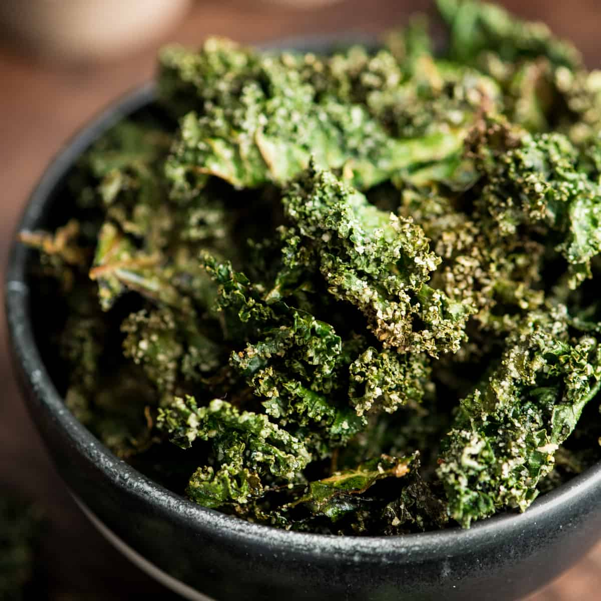

Baked Kale Chips

Description
These crispy oven-baked kale chips are a great homemade snack. You cannot stop at just eating one, just like potato chips. Great for parties, too.
Imagine being able to munch as many crunchy snacks as you want while you're binging that show you love without feeling guilty later. That's the beauty of these homemade baked kale chips. Made by quickly tossing together three simple ingredients – fresh kale, olive oil, and flaked sea salt – and baked low and slow for only 20 minutes, these crispy kale chips are easy to make, there are no mystery additives, and even fussy eaters snap them up.
Ingredients
- 1 bunch kale
- 1 tablespoon olive oil
- 1 teaspoon flaked sea salt
Steps
- Gather all ingredients.
- Preheat an oven to 300 degrees F (150 degrees C). Line a rimmed baking sheet with parchment paper.
- With a knife or kitchen shears carefully remove kale leaves from the thick stems and tear into bite size pieces.
- Wash and thoroughly dry kale with a salad spinner.
- Drizzle kale leaves with olive oil and toss to combine. Spread out in an even layer on the baking sheet without overlapping and sprinkle with salt.
- Bake until the edges start to brown but are not burnt, 20 to 30 minutes.
- Enjoy!